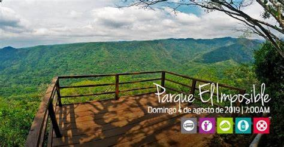
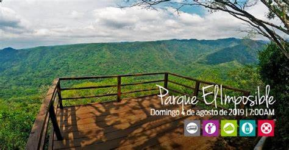

Los parques nacionales y áreas protegidas de El Salvador son lugares donde los turistas pueden generar una conexión profunda con la naturaleza y estar en sintonía con el ambiente natural que les rodea, por medio de caminatas en los recorridos que se ofrecen o impresionantes vistas que se pueden observar desde cualquier punto.
Los Parques Nacionales son espacios naturales del territorio, que son protegidos por el Estado y que han sido poco alterados por la actividad humana.
Estos sitios tienen una gran importancia a nivel nacional no solo por su belleza escénica, si no porque también, son ejemplos representativos de ecosistemas de gran valor científico y /o histórico, hábitats para una variedad de especies de animales y plantas, son sitios territoriales de relevancia ecológica, científica, educativa, cultural, recreativa y turística, por lo que reviste un interés de conservación para todos los salvadoreños.
Dentro de los principales beneficios que brindan, se destaca la provisión de agua (necesaria para el riego y para la vida diaria), de alimento, regula el clima, y protege la biodiversidad, además de proveer de otros servicios ambientales, como captura de carbono (que contribuye a mitigar el cambio climático), generación de oxígeno y retención de suelo que evita erosión e inundaciones. El Salvador cuenta con cuatro Parques Nacionales y una serie de áreas protegidas.
Actualmente los Parques Nacionales, constituyen un eje importante que facilita el turismo de naturaleza en El Salvador, y permite el disfrute de ambientes de volcanes, bosques, lagunas, ríos y de la vida silvestre, contribuyendo a la economía local y regional.
Los Parques Nacionales son visitados diariamente por personas nacionales y extranjeras, por lo que es necesario tramitar previamente autorización en el Ministerio de Medio Ambiente y Recursos Naturales. La protección de estos sitos es fundamental por ello es importante que cuando los visiten se debe acatar los reglamentos internos y las recomendaciones de los Guardarrecursos.
Para los turistas que aman las caminatas al aire libre y los bellos paisajes El Salvador cuenta con varios sitios que el viajero podrá disfrutar en su estadía, te invitamos a conocerlos en esta sección.
VOLVER AL MENU PRINCIPAL
 
